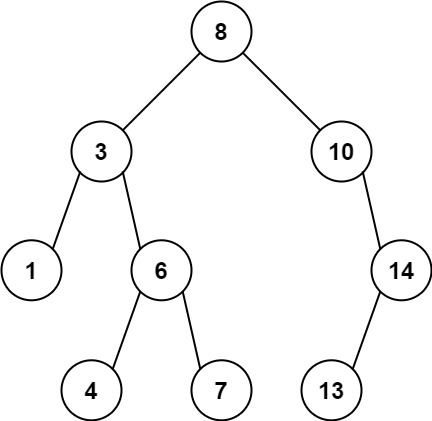
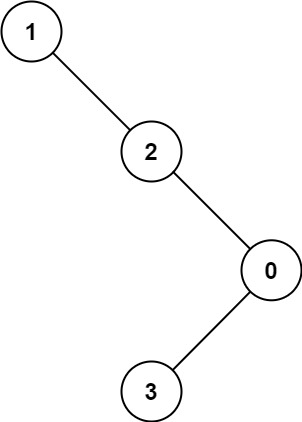

| Category | Difficulty | Likes | Dislikes |
|---|---|---|---|
| Algorithms | Medium | 5076 | 170 |
josh-technology | facebook | amazon | epam-systems
Given the root of a binary tree, find the maximum value v for which there exist different nodes a and b where v = |a.val - b.val| and a is an ancestor of b.
A node a is an ancestor of b if either: any child of a is equal to b or any child of a is an ancestor of b.
Example 1:

Input: root = [8,3,10,1,6,null,14,null,null,4,7,13]
Output: 7
Explanation: We have various ancestor-node differences, some of which are given below :
|8 - 3| = 5
|3 - 7| = 4
|8 - 1| = 7
|10 - 13| = 3
Among all possible differences, the maximum value of 7 is obtained by |8 - 1| = 7.Example 2:

Input: root = [1,null,2,null,0,3]
Output: 3
Constraints:
[2, 5000].0 <= Node.val <= 105